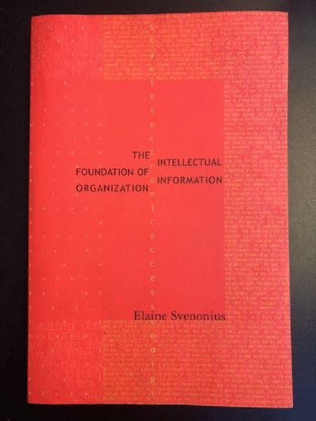
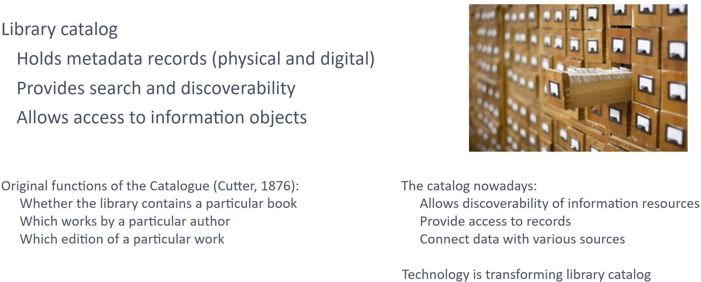

Organization of Information: An Overview
LIS 5043: Organization of Information
Welcome!

Dr. Manika Lamba
Office: Room 118E, Bizzell Library
Office hours: Tuesdays & Thursdays (2:30-5 PM) or by appointment
Email: manika@ou.edu
Research interests: information organization, digital libraries, science of science using text mining, NLP, & machine learning
Information – Some Definitions
“Something received or obtained through informing. Informing is done through the mechanisms of sending a message or communication; thus, information is”the content of a message” or “something that is communicated.” (Svenonius, 2000, p. 7)
“The term document […] to refer to an information-bearing message in recorded form:
a piece of information
a writing (as a book, report, or letter) conveying information
a material having on it (as a coin or stone) a representation of the thoughts of men by means of some conventional mark or symbol” (Svenonius, 2000, p. 8 apud Webster’s Third New International Dictionary, 1966)
Information is an abstract, but the documents that contain it are embodied in some medium, such as paper, canvas, stone, glass, floppy disks, or computer chips. Potentially any medium can serve as a carrier of information” (Svenonius, 2000, p. 8)
Organizing Information
“Organizing information would seem to be no different from organizing anything else. […] But there are important differences”
However, it cannot be interpreted as database modeling techniques used for organizing entities
“One that is particularly important […] is that two distinct entities need to be organized in tandem [in conjunction] and with respect to each other: works and the documents that embody them.”

What is information organization?
- Approaches have evolved over time
- The digital revolution is prompting us to question established practices and the scope of our responsibility:
What is a document?What is a collection?What are the best practices for organizing and accessing information resources?How have these things changed?
- The creation of a system
that lets people do things- finds, manage, select, locate, obtain
with the things that carry information- an intellectual or creative work
- a text in a specific language
- a file with a specific format
- a physical item
Core library activities
Identify, acquire, preserve, and provide access to the world’s published knowledge
Promote equity of access to information
Promote intellectual freedom
Support education and continuous learning and research
Support the development of information literacy in society
Serve as focal points for communities and promote community interests
Information organization should work to support all of these activities
Why do we need information organization?
Understand-- We organize information to make sense of it, to make it useful to use in some waySave time-- We organize information to provide information in a timely mannerCollocate-- We organize information to bring together things or ideas together into a groupRetrieve-- We organize information in order to retrieve it
How do we organize information?
Two basic operations
LumpingSplitting
Grouping things together based on their similarities
Differentiating one thing form another
Through Representation
What do we need to know for organizing information?
- The needs, capabilities, and behaviors of users
- The nature of information
- Concepts and processes for describing information objects
- The way information systems work
Users as our main focus
- What is a user? (can machines be user?)
- Who are they? (demographics, experience level)
- Why are they seeking information? What are their information needs? (information behavior)
What do we organize?
Information Objects
- Books
- Journals
- Paintings
- Websites
- Maps
- Videos
- Music
- Blogs
- Social Media Posts
- Sound Recordings
- Photographs
- Computer
- Files
Expression & Representation of Information
- Ideas, information, knowledge, etc. are represented in recorded form (eg., essay, novel, movie, art object, sound recording, digital photos)
- Information professionals create representations of the information object (container and content)
- These representations, or surrogates, are often what users first encounter in information seeking
Information Systems
An Information System is a “formal socio-technical system to collect, process, and share information of any kind. It is a means to connect people, information, and technology to carry out particular tasks in a defined manner” (Bawden & Robinson, 2022)
An
Information Organization Frameworkconsists ofInformation Organization Systems(such as classification schemes, taxonomies, ontologies, bibliographic descriptions, etc.) (Tennis, 2006)Information organization frameworks comprise bibliographic control, information retrieval, resource discovery, resource description, open access scholarly indexing, personal information management protocols, and social tagging
System of organization
- Representation of a thing that carries information
- Connecting (embedding or associating) description with information objects
Example of system of organization: Bibliographic systems
Library Catalog
Information retrieval systems
- Central tool in information system
- User interacts with IR system in searching
- Components of an information retrieval (IR) system
- An
interfacewhere a user interacts with the IR system - Could be a person or a computer screen - A
languagethe user and system share to communicate - Natural language or structured search language - A
set of representationsof information objects - A
matching component- Matches users requests and the representations
- An
interaction component- Allows iterative requests and responses - A
set of messagesbetween the user and the system - Searches, results, error messages, etc
Challenges of organizing information & knowledge
- Goal is to
connectusers to the information
- There is no one “correct” way to organize information
Buildupon past practices and understandings
- Remember that
representationsis central concept- Create representations that serve users, not just the librarians
- Accept that there is not one right representation for all users/user groups
- Address the
digital (and AI!) environmentwith its more complex and multifaceted information objects- The Universe of Knowledge is vast and evolving due to new technologies, changes to culture, and the increased accessibility of digital resources
Going Forward
We will use a conceptual/practice-based approach to information organization
We will balance the conceptual with practice hands on work
- The Learning Activities and Exercises will require you to grapple with the concepts and put them to work
You will be introduced to new technical terminology and tools